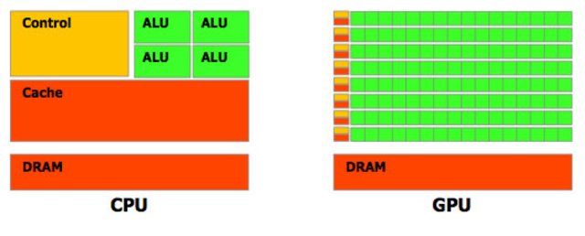
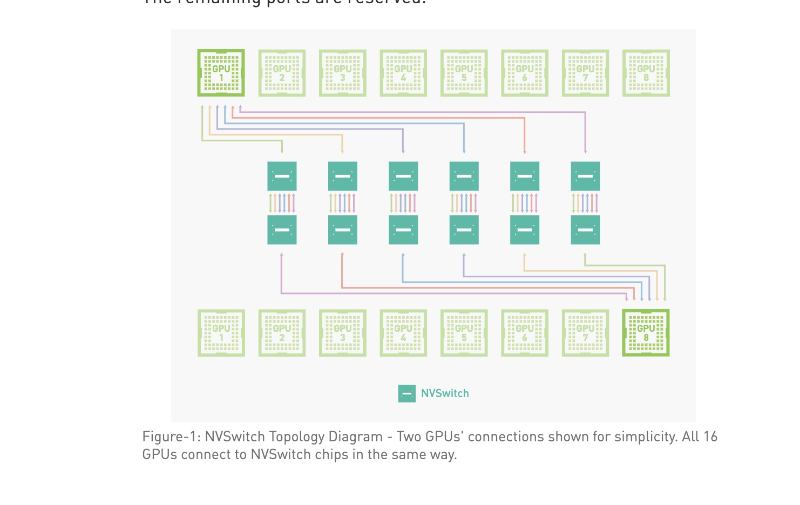

Nvidia's HGX Systems and the Future of High-Performance Computing
The combination of HPC, or high-performance computing, together with artificial intelligence, introduces to us a new way of thinking about the solution of complex problems, from climate change predictions to medical research. At the top of this new revolution is Nvidia with its HGX systems—powerful platforms designed for the most demanding computational tasks. But what exactly are these HGX systems, how do they work, and what is in their future? These are essential questions that we should be asking when exploring this exciting field.
What are Nvidia HGX Systems?

Image:Nvidia
Nvidia HGX systems are high-performance platforms tailored for AI and HPC workloads. Consider them as supercomputers that can process large amounts of data at ultra-fast speeds. They comprise a lot of GPUs interconnected with high-bandwidth, low-latency communication technologies like NVLink and NVswitch. This architecture is designed to scale up a great variety of applications—at notch—from deep learning and data analytics to simulation and scientific computing.
One major characteristic of the HGX systems is flexibility. They can be configured for a vast range of industries—from the research lab running complex simulations to the tech company training big AI models. For various workload types, corresponding Nvidia HGX system configurations are provided, including HGX-1 and HGX-2.
How do the Nvidia HGX Systems work?
To understand how HGX systems work, let's break down their components and the technologies that power them.
GPUs and CUDA Cores
(Image taken from https://commons.wikimedia.org/wiki/File:Composant_GPU_et_CPU.png)
{kind=link}
The image above shows the difference between a GPU and CPU.Nvidia GPUs use CUDA cores, the small processing units of a GPU. CUDA, short for Compute Unified Device Architecture, is a parallel computing platform plus a programming model from Nvidia. Using CUDA, developers can efficiently program to make use of the extreme parallelism in graphics processing units at their advantage in high computational-intensive tasks.
NVLink and NVSwitch
However, there are challenges as expected with any innovation. One of the challenging issues in both HPC and AI environments is how to transfer data between heterogeneous modules quickly. Heterogeneous modulus can be basically be thought of as systems that use different types of processors or computing units together to perform tasks more efficiently, for example, they use both CPUs and GPUs to speed up tasks like AI training, where CPUs handle logic and GPUs process data in parallel.
NVLink and NVSwitch are designed to cure such problems. NVLink is a kind of high-speed interconnect technology that will enable GPUs to share data—such as with another GPU or the CPU—at much faster speeds than possible using traditional PCIe links.
(Source: https://images.nvidia.com/content/pdf/nvswitch-technical-overview.pdf/a>)
NVSwitch furthers this by giving every GPU full connectivity for a mesh network. Thus, data is moved between any pair of GPUs without needing to travel through the CPU—thereby drastically reducing latency and boosting overall system performance. Hardware, however, is only half the battle. To let HGX systems loose on the world, fully realizing their potential for destruction—er, to unleash the entirety of their potential on the world—Nvidia's furnished a solid software ecosystem. Among these libraries and frameworks are CUDA, cuDNN—CUDA Deep Neural Network library—and TensorRT, which is a platform for high-performance deep learning inference. Each of these tools helps in the optimization of applications on Nvidia GPUs to squeeze the most performance possible from them. Even more so with the continuous development of hardware and software for even greater capabilities in the fields of HPC and AI, the future for the systems by Nvidia HGX seems extraordinarily bright. One of the most exciting trends in HPC, however, is the drive toward exascale computing. One way to define an exascale computer is that it can execute 1 billion billion (that is, 1 followed by 18 zeros) calculations per second. Nvidia is leading the charge into this future, and HGX systems become building blocks in the construction of next-generation supercomputers. (Source:The Exascale-class HPE Cray EX Supercomputer at Oak Ridge National Laboratory. (Photo: Oak Ridge National Laboratory.)
https://www.pnnl.gov/explainer-articles/exascale-computing/a>)
Exascale computing is going to enable breakthroughs in everything from genomics and drug discovery to climate modeling and astrophysics. Exascale systems are going to process vast reams of data at unparalleled speeds to help scientists model some of humanity's greatest challenges. As AI continues to develop further, this will turn the requirement for amalgamation of AI capabilities with HPC systems into imperative duty. The HGX systems from Nvidia are designed with all complex computing in mind that is required for the training and deployment of the AI models. With new AI algorithms being more sophisticated and larger data sets, demand for hardware that guarantees high performance can only rise. Nvidia is already working on that with technologies like Tensor Cores. One way to describe this technology is that it's specialized hardware inside its GPUs tailored to specifically deal with AI workloads. Tensor Cores are targeted at speeding up matrix operations, making them core constituents of neural network training and inference, hence transpiring into accelerated, efficient AI models. Though at a very early stage, quantum computing has the potential to change HPC. Quantum computers make use of principles from quantum mechanics for the execution of computations beyond the ability of classical computers. To read more about Quantum computing, you can read the blog on quantum computing. Nvidia is also uncompromisingly researching at the intersection of quantum and HPC for hybrid systems that unite their potential. Quantum Computing: Quantum computing can give rise to possibilities in new fields, such as cryptography, materials science, and optimization problems. With the integration of quantum processors alongside traditional Nvidia GPUs, it becomes imaginable to build systems that solve problems still beyond the reach of today's technology. The system runners of the HGX represent the most advanced computing capabilities in high performance and AI from Nvidia. With powerful GPUs, state-of-the-art interconnect technologies, and a software ecosystem touching everything, HGX systems are creating a good number of Industrial transformation and enabling new discoveries. While this has been so far, forward-looking, exascale computing shall be grinning at advancements in AI integration and quantum computing. Whether you are a researcher, a developer, or just a plain tech enthusiast, the world of HPC and AI is pretty exciting with Nvidia's HGX systems leading the charge.
Written By Akshay Srinivas
Bibliography
https://blogs.nvidia.com/blog/efficient-ai-supercomputers-sc23/
https://digialps.com/nvidia-h200-tensor-core-gpu-most-powerful-gpu-for-ai-hpc/
https://www.nvidia.com/en-us/data-center/hgx/
https://www.allaboutcircuits.com/news/nvidia-dives-into-industrial-hpc-with-hgx-platform/
Software Ecosystem
The Future of HGX Systems from Nvidia
Exascale Computing

AI Integration
Quantum Computing
Conclusion